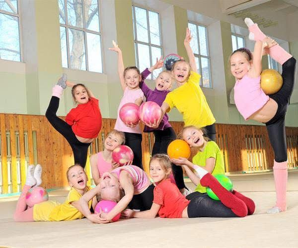
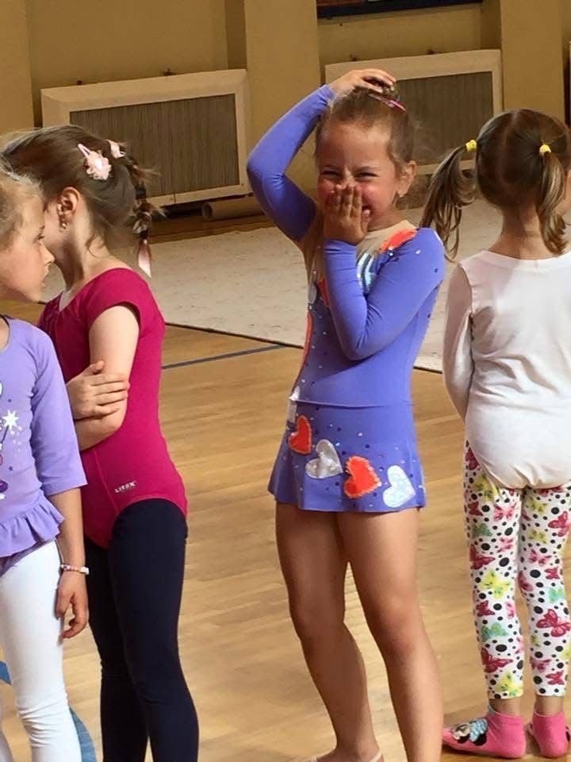
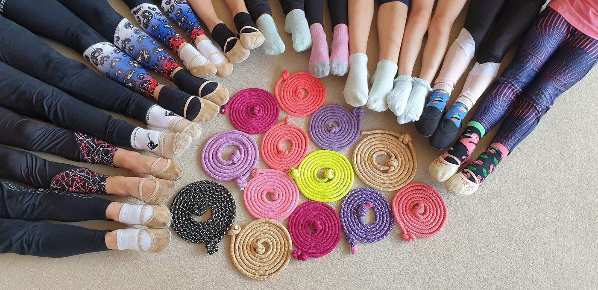

Krúžok modernej gymnastiky pre najmenšie šampiónky
Moderná gymnastika prichádza do Turian!
Pre veľký záujem rodičov z minulého školského roka otvárame od tejto jesene v Turanoch nový krúžok modernej gymnastiky — pohyb, radosť a šport, ktorý deti bude baviť aj o pár rokov.

O krúžku
Čo je moderná gymnastika?
Moderná gymnastika je krásny a všestranný šport, ktorý spája pohyb, hudbu a cvičenie s náčiním — švihadlom, obručou, loptou, neskôr aj stuhou či kužeľmi. Rozvíja telo aj cit pre rytmus a pohyb.
Ohybnosť
Prirodzená pohyblivosť tela.
Sila
Zdravé a silné telo.
Koordinácia
Cit pre vlastné telo a pohyb.
Základy baletu
Držanie tela, grácia, elegancia.
Postupne sa deti naučia pracovať so švihadlom, obručou, loptou, a neskôr aj so stuhou a kužeľmi. Toto všetko im dá výborný základ nielen pre tanec, ale aj pre množstvo iných športov do budúcnosti.
Pod vedením skúsených trénerok
Kto bude deti trénovať
Zuzana Száraz
Rodáčka z Bratislavy, bývalá reprezentantka Slovenska v modernej gymnastike a účastníčka Majstrovstiev sveta a Európy. Práve ona pred rokmi položila základy tohto športu v Turci a dnes ho prináša aj deťom v Turanoch. Okrem vlastného tréningu Zuzana roky vedie a vychováva aj tím mladých a talentovaných trénerok, ktoré budú deti trénovať spolu s ňou.

Sofia Bučková
Sofia (18) je študentka bilingválneho gymnázia v Sučanoch. Modernej gymnastike sa venuje viac ako 10 rokov — najskôr ako pretekárka na súťažiach, dnes svoje skúsenosti odovzdáva najmenším. Posledné roky sa venuje trénovaniu detí a je vyhľadávanou trénerkou aj pre individuálnu prípravu tanečníkov v oblasti ohybnosti a koordinácie tela.
Vekové kategórie
Pre koho je krúžok určený
Prijímame v dvoch vekových kategóriách, aby tréning zodpovedal veku a možnostiam detí.
Praktické informácie
Ako to celé funguje
9. a 10. 9. 2026
15:30 – 17:00 hod.
15. 9. 2026
15:00 – 17:00 hod.
📍 Zápis prebieha osobne v Súkromnej ZUŠ Turany (Komenského 1120) v uvedených termínoch a časoch.
⏳ Miesta sú limitované na 15 detí
Krúžok otvárame až po naplnení kapacity. Presný deň a čas tréningov upresníme prihláseným rodičom po zápise, bližšie informácie posielame koncom septembra.

Príprava na tréning
Čo si dieťa vezme na tréning
- ✓Vlasy upravené a zopnuté tak, aby nepadali do očí — ideálne drdol.
- ✓Oblečenie na úvod stačia legíny a tričko, skôr priliehavé (nič príliš voľné).
- ✓Na nôžky stačia ponožky.
- ✓Ak už dieťa má gymnastický dres, je na tréning ideálny — nie je však nevyhnutný.
Postupný rozvoj
S akým náčiním budú deti cvičiť
Deti postupne prejdú od základných po pokročilé náčinie modernej gymnastiky — v tempe, ktoré zodpovedá ich veku a šikovnosti.
Švihadlo
Základ rytmu a koordinácie.
Obruč
Rotácie, hody a chytanie.
Lopta
Jemnosť pohybu a rovnováha.
Stuha a kužele
Pre pokročilejšie dievčatá.
Časté otázky
Čo vás asi zaujíma
Od akého veku môže dieťa začať s modernou gymnastikou?
Deti prijímame v dvoch vekových kategóriách — 4 – 7 rokov a 8+ rokov — tak, aby tréning zodpovedal veku a možnostiam detí.
Potrebuje dieťa mať predchádzajúce skúsenosti?
Nie. Krúžok je určený aj pre úplných začiatočníkov aj pre deti, ktoré sa chcú v pohybe ďalej zlepšovať.
Ako prebieha platba?
Platba prebieha mesačne, vždy vopred za daný mesiac. Cena je 35 € za mesiac.
Čo ak dieťa v daný mesiac vynechá tréning?
Uhradené tréningy zostávajú v plnej výške — po zaplatení sa počíta s pravidelnou dochádzkou. Výnimočné prípady radi vyriešime individuálne, stačí nás kontaktovať.
Ako a kedy sa prihlásiť?
Zápis prebieha osobne v Súkromnej ZUŠ Turany 9. a 10. 9. 2026 od 15:30 do 17:00 a 15. 9. 2026 od 15:00 do 17:00. Vyplniť môžete aj prihlášku nižšie na stránke, alebo nás jednoducho kontaktujte telefonicky.
Kde presne krúžok prebieha?
Tréningy prebiehajú v priestoroch Súkromnej základnej umeleckej školy v Turanoch (Komenského 1120, 038 53 Turany), dostupnej aj z okolia Martina a Vrútok.
Zapíšte svoje dieťa už dnes
Registračný formulár
Vyplňte prihlášku nižšie — ozveme sa vám s ďalšími informáciami. Polia označené * sú povinné.
Kontakt
Máte otázku? Ozvite sa
V priestoroch ZUŠ Turany · pod záštitou SA-Ni Art studio, o.z.